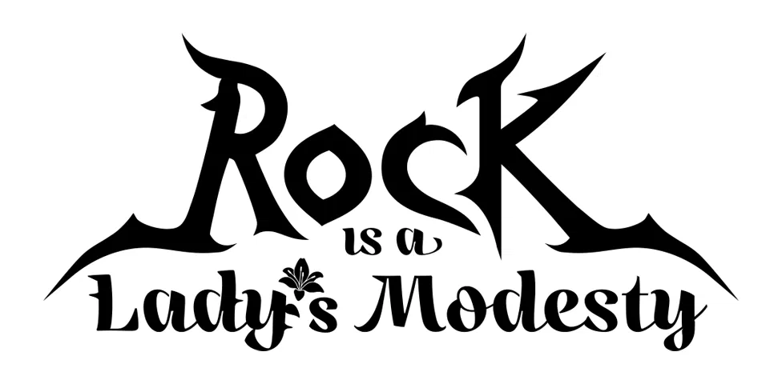

Animék amiket megnéztemAnimes I watched
| DátumDate | CímTitle | MűfajGenre | Nyelv Language | Várok-e valamire?Am I waiting for something? |
|---|---|---|---|---|
| 2024 végeThe end of 2024 | Bújj, bújj, szellem! (学校の怪談)Ghost Stories (学校の怪談) |
Fekete humor / horror-vígjátékBlack humor / horror comedy | ENG | |
| 2025.01. - 2025.02. | NANA | Dráma, zene, romantikusDrama, music, romance | ENG | |
| 2025.02. - 2025.03.05. | Attack on Titan (進撃の巨人) |
Akció, posztapokaliptikusAction, post-apocalyptic | ENG | |
| 2025.03.08. - 2025.03.16. | dEATh noTe — A halállistadEATh noTe (デスノート) |
Rejtély, pszichológiai thrillerMystery, psychological thriller | ENG | |
| 2025.03.21. - 2025.04.24. 「S01-S03」 |
Re:ZERO - Starting Life in Another World - (Re:ゼロから始める異世界生活) |
Kaland, dark fantasyAdventure, dark fantasy | ENG | Igen, 4. évad. 「2026」Yes, Season 4. 「2026」 |
| 2025.04.25. - 2025.06.03. |
けいおん! K-On!, K-On!!, K-On! the Movie (けいおん!, けいおん!!, 映画けいおん!) |
Slice of life, vígjáték, zeneSlice of life, comedy, music | ENG | |
| 2025.06.08. - 2025.06.09. |  (チェンソーマン) |
Akció, horror-vígjátékAction, horror comedy | ENG | |
| 2025.06.10. - 2025.06.13. 「S01」 |
BOCCHI THE ROCK (ぼっち・ざ・ろっく！) |
Vígjáték, zeneComedy, music | JPN + ENG | Igen, 2. évad.Yes, Season 2. |
| 2025.07.01. - 2025.07.17. | NEON GENESIS EVANGELION (新世紀エヴァンゲリオン) |
Pszichológiai dráma, mechaPsychological drama, mecha | ENG | |
| 2025.08.12. | THE END OF EVANGELION (新世紀エヴァンゲリオン劇場版 Air/まごころを、君に) |
Pszichológiai dráma, mechaPsychological drama, mecha | ENG |
|
| 2025.08.25. - 2025.08.27. | LycorisRecoil (リコリス・リコイル) |
Slice of life, akció (fegyveres lányok)Slice of life, action (girls with guns) |
ENG | |
| 2025.10.23. - 2025.10.24. |  (ロックは淑女の嗜みでして) |
Felnőtté válás, zeneComing-of-age, music |
JPN + ENG | |
| 2025.10.25. | THE MOVIEREZEARC (劇場版 チェンソーマン レゼ篇) |
Akció, horror-vígjátékAction, horror comedy | JPN + ENG | |
| 2025.11.01. - 2025.11.07. | Welcome to the N.H.K.(NHKにようこそ!) |
Fekete komédia, pszichológiai drámaBlack comedy, psychological drama | ENG | |
| 2025.11.22. - 2025.11.28. | DARLING in the FRANXX (ダーリン・イン・ザ・フランキス) |
Mecha, romantikus drámaMecha, romantic drama | JPN + ENG | |
| 2025.11.29. - | TRIGUN (トライガン) |
Akció, posztapokaliptikus, westernAction, post-apocalyptic, western | ENG |
A táblázat görgethető!
The table is scrollable!
Jelmagyarázat:Legend:
- JPN = JapánJapanese
- ENG = AngolEnglish
- = SzinkronosDubbed
- = FeliratosSubtitles